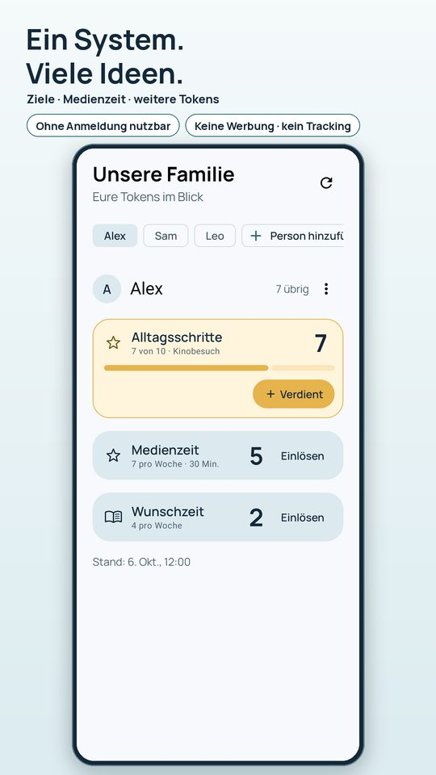
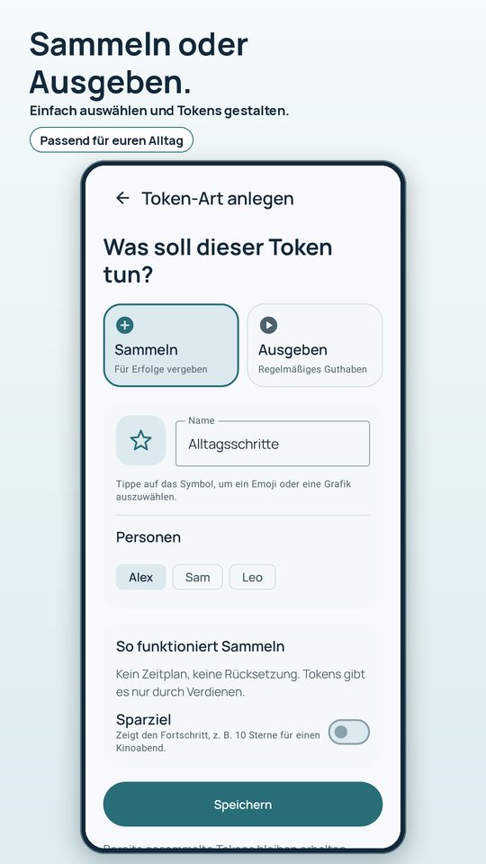
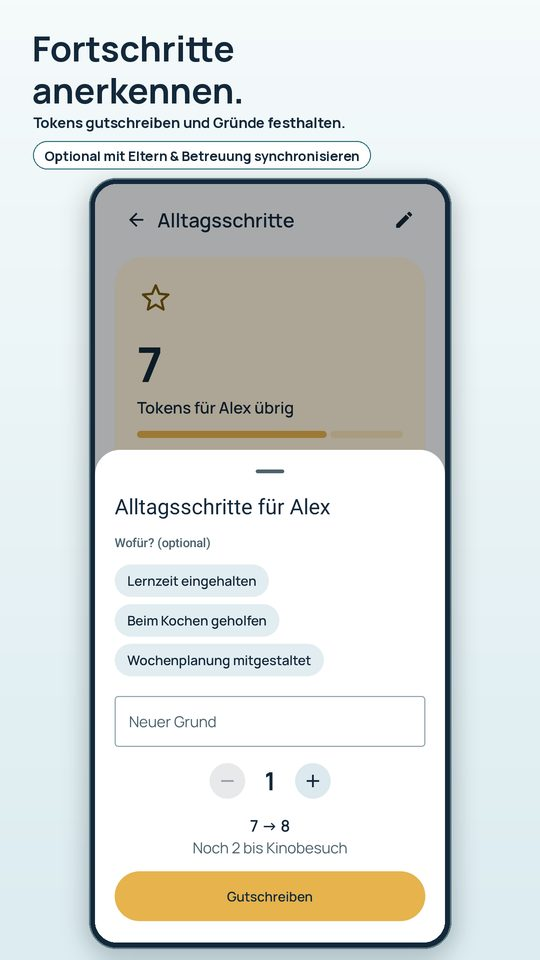
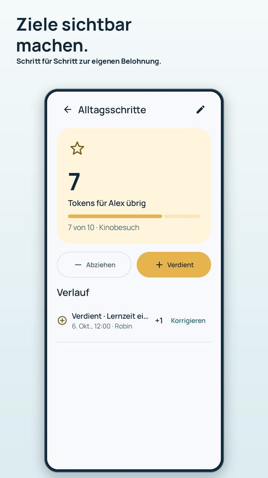
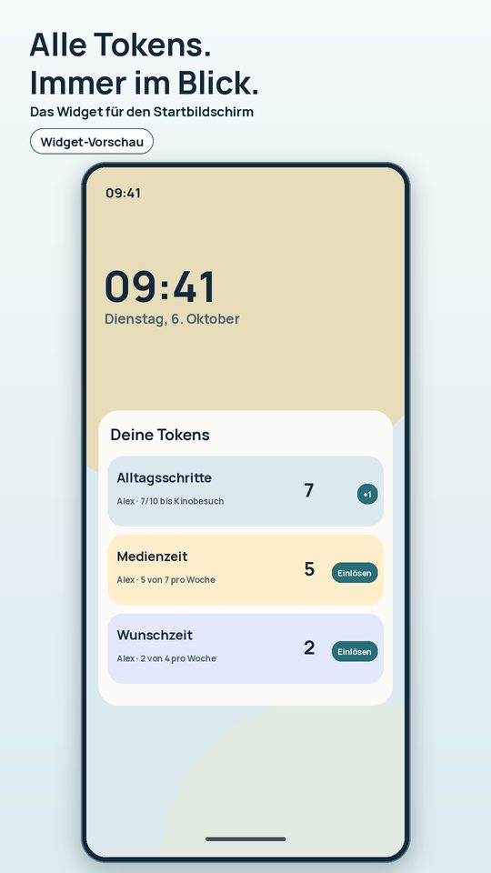

Token System
Android-App für Familien und WohngruppenMedienzeit, Mithilfe, Lernziele: Haltet eure Vereinbarungen an einem Ort fest. Jedes Kind sieht auf dem Widget oder dem eigenen Tablet, was noch übrig ist.
Token System läuft gerade im geschlossenen Test auf Google Play. Schreib uns kurz, dann bekommst du eine Einladung.





Täglich, wöchentlich oder monatlich, mit oder ohne Übertrag. Zum Beispiel 7 Tokens pro Woche, jedes steht für 30 Minuten, mit Countdown.
Tokens für Mithilfe oder Lernzeit sammeln, ein Ziel mit Belohnung festlegen und den Fortschritt sehen.
Stand und Einlösen direkt auf dem Startbildschirm. Auf Wunsch erst mit Rückfrage.
Das Kind sieht große Münzen mit seinem eigenen Stand. Ansehen geht, ändern nicht.
Das zweite Handy verbindet ihr per QR-Code, mit oder ohne Google-Konto. Änderungen werden offline gespeichert und später gesendet.
Wofür gab es Tokens, wofür wurden sie eingelöst? Fehlbuchungen lassen sich korrigieren.
So funktioniert’s
- Kind und Regel anlegen. Name eingeben, Vorlage wählen (Sammeln oder Ausgeben), Menge anpassen.
- Tokens verteilen. Bei Budgets füllt die App automatisch wieder auf, beim Sammeln schreibt ihr Tokens gut.
- Einlösen. Mit einem Tipp in der App oder im Widget. Das Kind sieht den neuen Stand sofort.
Für Wohngruppen und Teams
Mehrere Betreuende sehen denselben Stand, jedes Kind hat sein eigenes Guthaben, und der Verlauf zeigt, wer wann was gebucht hat. Wenn ihr eine Gruppe begleitet und die App in einem Pilot testen wollt, schreibt uns an mobdev@tuta.com.
Privat gedacht
Keine Werbung, keine Tracking- oder Analyse-SDKs, kein Verkauf von Daten. Ihr könnt die App komplett lokal und offline nutzen oder optional synchronisieren, anonym oder mit Google-Konto; die Daten liegen dann in der EU (Irland). Konto und Daten lassen sich in der App löschen. Mehr in der Datenschutzerklärung.
Häufige Fragen
Brauche ich ein Konto?
Nein. Lokal geht ohne Konto und ohne Internet. Zum Teilen mit dem zweiten Elternteil gibt es optionale Synchronisierung, auch ohne Google-Konto.
Sperrt die App Handy oder Tablet?
Nein. Token System hält eure Absprachen fest und erinnert an das Ende der Zeit. Es sperrt keine anderen Apps oder Geräte.
Ist das eine Therapie-App?
Nein. Tokensysteme werden unter anderem in pädagogischen Kontexten genutzt. Die App verwaltet nur eure Vereinbarungen und bietet keine Diagnostik oder Behandlungsplanung.
Was passiert mit den Namen der Kinder?
Lokal bleiben sie auf dem Gerät. Bei Synchronisierung liegen sie verschlüsselt übertragen in der EU. Spitznamen funktionieren genauso gut.
Gibt es eine iPhone-Version?
Aktuell nur für Android.
Der Ratgeber hilft beim Einstieg: Tokensystem für Kinder einrichten · Medienzeit mit Tokens regeln